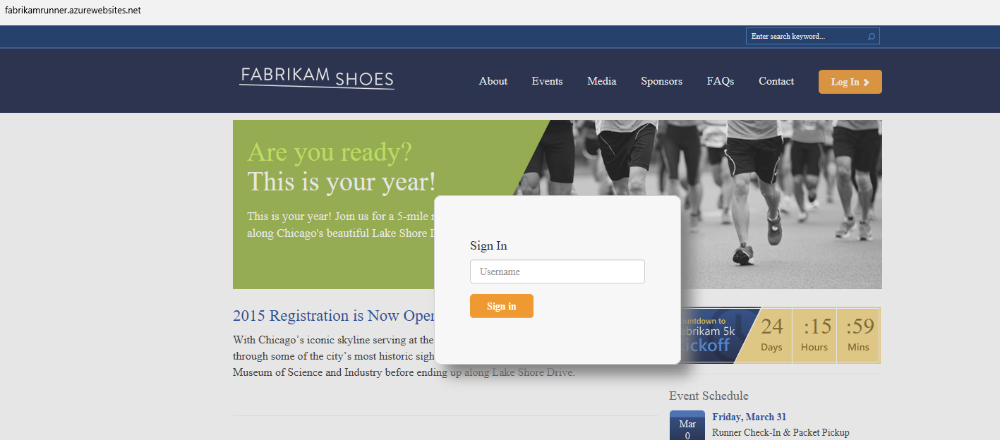
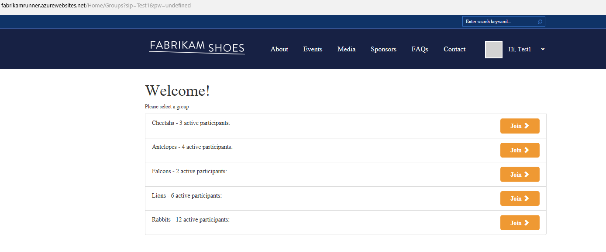
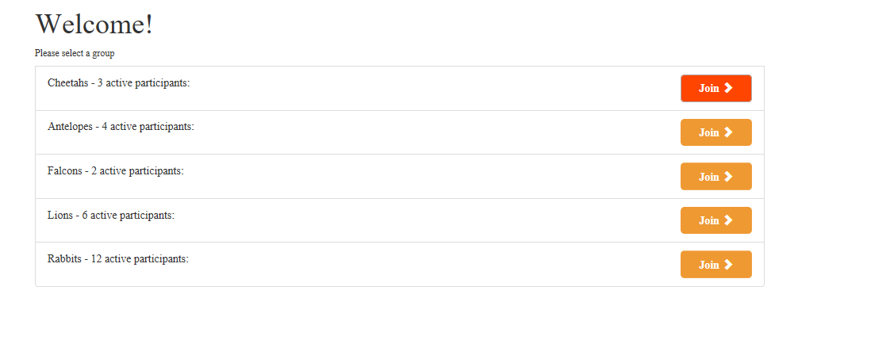
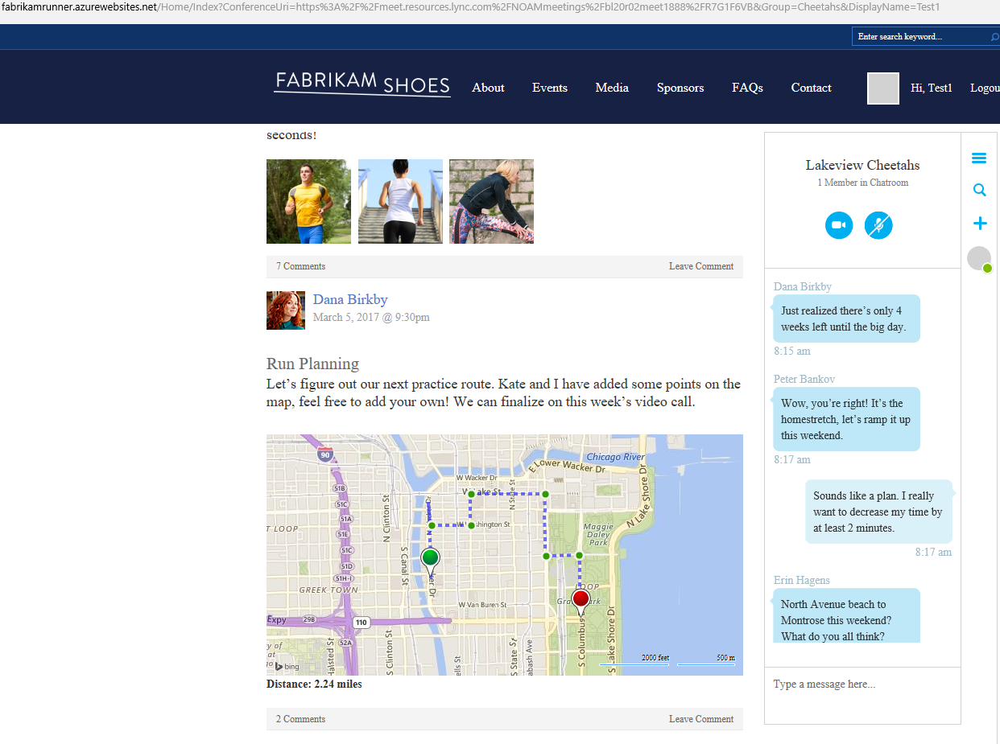
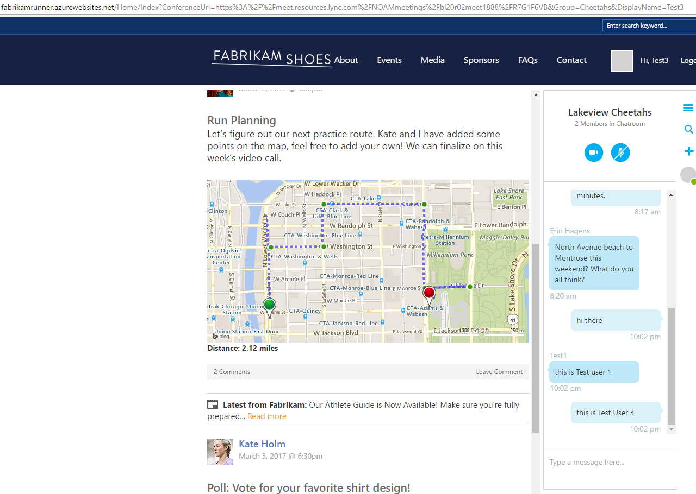

Fabrikam Runner
- Navigate to http://fabrikamrunner.azurewebsites.net/
- Click Log In and enter a new user name and Sign in

- Once sign in, client will send out request to get meeting URL as below:

- Click one of them to join

- It will join the meeting anonymously as below:

- Try to join from new browser instance and you will have communication as below

- Please note the Bing map is interactive, if you update location from one side the other side will be updated as well.